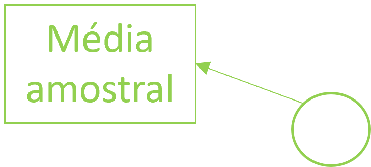
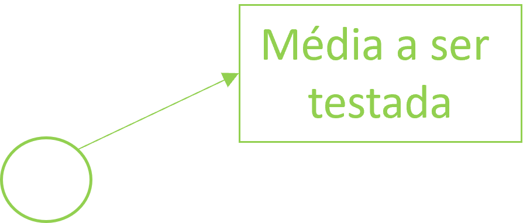
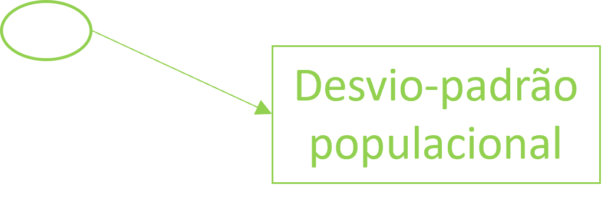

| ν | 0.6 | 0.7 | 0.8 | 0.9 | 0.95 | 0.975 | 0.98 | 0.99 | 0.995 |
|---|---|---|---|---|---|---|---|---|---|
| 1 | 0.325 | 0.727 | 1.376 | 3.078 | 6.314 | 12.706 | 15.895 | 31.821 | 63.657 |
| 2 | 0.289 | 0.617 | 1.061 | 1.886 | 2.920 | 4.303 | 4.849 | 6.965 | 9.925 |
| 3 | 0.277 | 0.584 | 0.978 | 1.638 | 2.353 | 3.182 | 3.482 | 4.541 | 5.841 |
| 4 | 0.271 | 0.569 | 0.941 | 1.533 | 2.132 | 2.776 | 2.999 | 3.747 | 4.604 |
| 5 | 0.267 | 0.559 | 0.920 | 1.476 | 2.015 | 2.571 | 2.757 | 3.365 | 4.032 |
| 6 | 0.265 | 0.553 | 0.906 | 1.440 | 1.943 | 2.447 | 2.612 | 3.143 | 3.707 |
| 7 | 0.263 | 0.549 | 0.896 | 1.415 | 1.895 | 2.365 | 2.517 | 2.998 | 3.499 |
| 8 | 0.262 | 0.546 | 0.889 | 1.397 | 1.860 | 2.306 | 2.449 | 2.896 | 3.355 |
| 9 | 0.261 | 0.543 | 0.883 | 1.383 | 1.833 | 2.262 | 2.398 | 2.821 | 3.250 |
| 10 | 0.260 | 0.542 | 0.879 | 1.372 | 1.812 | 2.228 | 2.359 | 2.764 | 3.169 |
Revisão de conceitos básicos
Testes de hipóteses
Teste T
- William Sealy Gosset
- (13 de Junho de 1876 – 16 de Outubro de 1937)
- Trabalhou como estatístico na Guinness
- Karl Pearson
- Regressão linear
- Classificação de distribuições
- Chi-quadrado de Pearson
- Coeficiente de correlação
- CENTENAS DE DADOS
- Método para pequenas amostras
- Não era permitido publicar trabalhando na Guinness
- “Student”

Testes de significância para uma amostra
- Etapas:
- H0: Fixar o valor µ0 da média µ a ser testado - µ = µ0.
- H1: Escolher hipótese alternativa:
- µ < µ0
- µ > µ0
- µ ≠ µ0
- Determinar o valor crítico:
- Para pequenas amostras
- tα/2 ou tα (teste unilateral), com v = n-1 g.l.
- Para pequenas amostras
- Para grandes amostras
- z α/2 ou tα (teste unilateral)
\[
Z = \frac{\bar{x}-\mu_0}{\frac{\sigma}{\sqrt{n}}}
\]
\[ t = \frac{\bar{x}-\mu_0}{\frac{s}{\sqrt{n}}} \]


